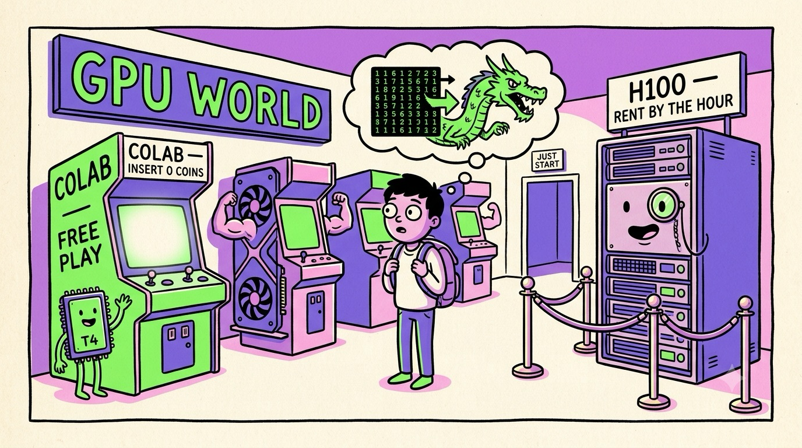

Chapter 10 · Your Move
Getting Your Hands on a GPU
Reading about warps is like reading about swimming. Time to get wet. The good news: in 2026 you do not need a $30,000 data-center card — or even a gaming PC — to run real GPU code today, for free, from a browser tab. Here's the landscape, the mentor's honest buying advice, and your first three projects.
Free GPUs, right now
- Google Colab (colab.research.google.com) — a notebook in your browser with a free NVIDIA T4 (16 GB). Runtime → Change runtime type → GPU. You can be running CUDA within five minutes of closing this book.
- Kaggle Notebooks — free weekly quota of T4/P100 GPU hours, plus datasets and competitions to practice on.
- Lightning.ai, Modal, and friends — free monthly credits on serious hardware, aimed at students and hobbyists.
- Rented muscle — when you outgrow free tiers: cloud A100s/H100s bill by the hour (a few dollars) on RunPod, Lambda, Vast.ai, Civo and co. Train for an afternoon, pay for a pizza.
Prove it to yourself — paste this into a Colab GPU notebook:
your first GPU benchmark (PyTorch)import torch, time
a = torch.randn(8192, 8192) # big matrix, CPU
b = torch.randn(8192, 8192)
t = time.time(); a @ b; cpu = time.time() - t
a, b = a.cuda(), b.cuda() # move once (Ch. 4!)
torch.cuda.synchronize()
t = time.time(); a @ b; torch.cuda.synchronize()
print(f"CPU {cpu:.2f}s GPU {time.time()-t:.4f}s")
Expect a 30–100× gap — and now you know exactly why: thousands of cores (Ch. 3), coalesced HBM streaming (Ch. 5), Tensor Cores eating tiles (Ch. 7).
Owning hardware: the honest guide
| You are… | Get | Why |
|---|---|---|
| Learning, experimenting | Free cloud (Colab/Kaggle) | $0, zero setup, real CUDA |
| A gamer who also does ML | Used RTX 3090/4090, or RTX 5060 Ti+ (16 GB) | VRAM is the spec that gates what fits — prioritize it over speed |
| Running local LLMs heavily | Mac with lots of unified memory, or 24–32 GB NVIDIA card | Decode = bandwidth ÷ model size (Ch. 8); memory capacity decides which models you can even load |
| Fine-tuning / research | Rented cloud H100/B200 hours | Buying frontier silicon is for companies, not dorm rooms |
Apple Silicon Macs put CPU and GPU on one chip sharing one pool of unified memory — no PCIe copies (a whole class of Chapter 4 gotchas just… gone), and up to hundreds of GB visible to the GPU. A maxed M-series Mac runs 70B models that would need multiple NVIDIA cards to even load — at lower speed, but silently, at your desk. The trade: NVIDIA still owns raw throughput and the CUDA software ecosystem. It's the classic engineering triangle: capacity, speed, ecosystem — pick your constraint.
Don't buy hardware as a substitute for starting. The student who ships a scrappy project on a free T4 learns more than the one still comparing spec sheets in month three. GPU skills transfer up; excuses don't.
Three projects, in rising order of glory
- The mandelbrot speedrun. Render the Mandelbrot set on CPU
(nested loops), then port it to a GPU kernel — it's Chapter 4's "one thread per
pixel" pattern exactly. Numba's
@cuda.jitlets you write the kernel in Python. Watch a minute become milliseconds, and feel warp divergence when you color by iteration count. - Run an LLM locally. Install Ollama or LM Studio, pull a small model (3–8B, quantized — Ch. 7 in action), and watch tokens stream while you monitor memory bandwidth. Then load a model slightly too big for your VRAM/RAM and watch tokens/sec fall off a cliff. Congratulations: you've measured the memory wall from Chapter 8.
- Write one real CUDA kernel. Vector add, then tiled matrix multiply with shared memory (Chapter 5's whiteboard). Race yours against cuBLAS and lose gracefully — then read about how the pros close the gap. This is the exact on-ramp to the highest-demand engineering specialty of the decade: GPU/kernels/inference optimization.

A funny zine-style cartoon arcade scene, hand-drawn ink with flat colors (electric green, violet, pink on cream paper): a wide-eyed student with a backpack stands in a neon arcade called "GPU WORLD". On the left, a friendly free-play machine labeled "COLAB — INSERT 0 COINS" glows invitingly with a T4 chip mascot waving. In the middle, gaming cabinets shaped like graphics cards flex cartoon muscles. On the right, behind velvet ropes, a towering refrigerator-sized server rack labeled "H100 — RENT BY THE HOUR" wears a monocle. A tiny sign over the exit reads "JUST START". The student's thought bubble shows a matrix turning into a dragon. Exaggerated, playful, no other small text. Target size ~1280×720px, 16:9 landscape; composed for a small on-page figure, subject centred with safe margins — it is letterboxed into a 16:9 box, so keep nothing important near the edges.
Generate this with your image agent, then drop the file here.
Where this is all going
Trends worth watching as you enter the field: inference eats the world (agents mean billions of LLM calls a day — tokens-per-watt is the new benchmark); memory keeps winning (HBM4, bigger unified-memory machines, processing-in-memory research — all attacks on Chapter 8's wall); the monoculture is loosening (AMD's ROCm, Apple's MLX, Triton — and every big AI lab designing custom silicon); and petaflop desktops (NVIDIA's Spark-class ARM+GPU boxes put datacenter-grade unified-memory machines on desks). The concepts in this book — SIMT, memory hierarchies, arithmetic intensity, precision trade-offs — transfer to every one of those futures. Chips change yearly; the physics of parallelism doesn't.
A GPU is a throughput machine: thousands of simple cores (Ch. 2–3), driven in warps of 32 (Ch. 3), programmed by launching one small function across a grid of threads (Ch. 4), fed by a memory pyramid whose bottom layer is the real bottleneck (Ch. 5). It grew up rendering triangles (Ch. 6), sprouted matrix engines and shrinking numbers for AI (Ch. 7), now spends its days streaming LLM weights per token (Ch. 8), and teams up by the hundred thousand in buildings that hum (Ch. 9). And you can drive one for free, tonight (Ch. 10). Go build something — and when it's slow, you'll know why.
Sources Google Colab & Kaggle documentation · "Apple Silicon vs NVIDIA for local LLMs in 2026" (kunalganglani.com) · Tom's Hardware, "Best Graphics Cards 2026" (tomshardware.com) · Modal, "NVIDIA B200 pricing 2025" (modal.com)